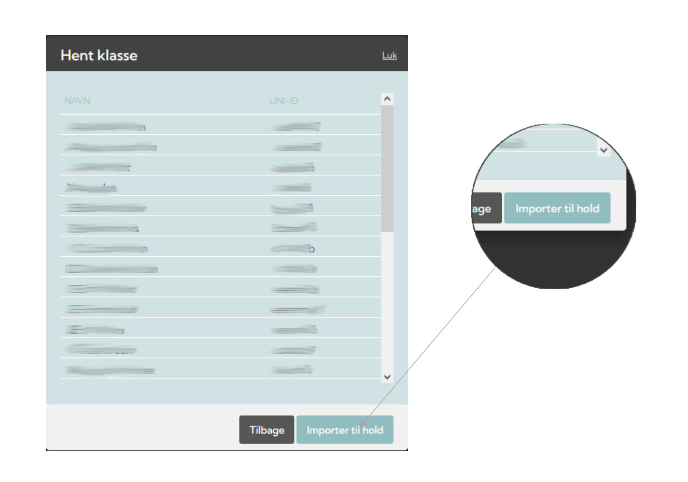
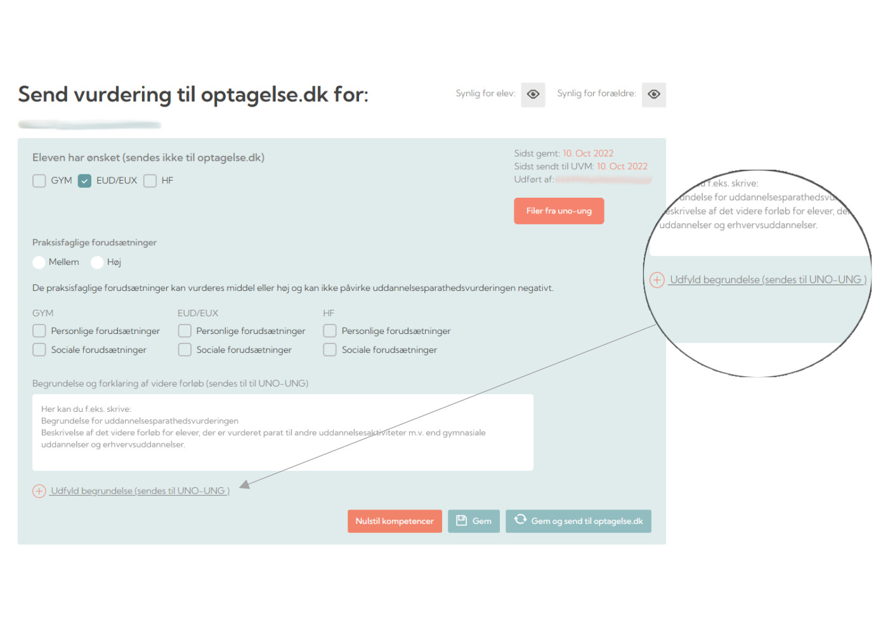
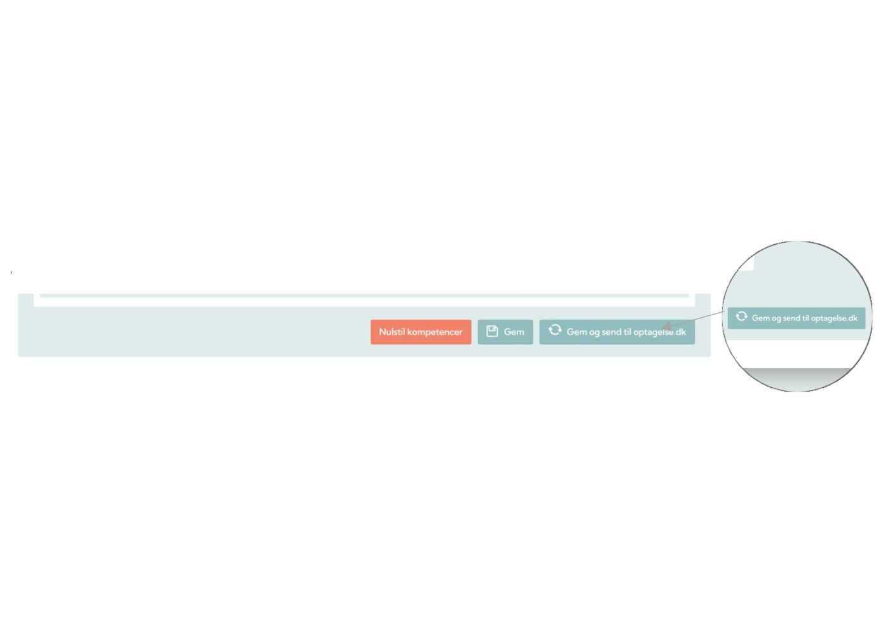

1 / 13
1.1 Vælg fanen ”Dine Elever”.
2 / 13
1.2 Tryk på knappen ”+ Hent klasse” og vælg herefter ”Institution” og dernæst vælg ”klasse”
3 / 13

1.3 Hent klassen ved at trykke på ”Importer til hold”, hvorefter du bliver ført ind i hold oversigten.
4 / 13
2.1 Vælg fanen ”Dine Elever”.
5 / 13
2.2 Vælg Stamklasse (Den med Kongekronen). Tryk derefter på ”Elev Oversigt”.
6 / 13
2.3 Kig under overskriften ”UPV” og klik på ”rediger” (blyanten) ud fra eleven.
7 / 13

2.4 Elevens UPV vises nu. Scroll ned på siden og tryk ”Udfyld begrundelser” og udfyld derefter både de
Personlige-, Sociale- og Praksisfaglige forudsætninger.
8 / 13

De Personlige-, Sociale- og Praksisfaglige forudsætninger udfoldes, som vist nedenfor, og du har nu mulighed
for at vurderer eleven.
9 / 13
2.5 Sæt en prik i henholdsvis Praksisfaglige-, Personlige- og de Sociale forudsætninger, hvis eleven opfylder
dem, eks. som vist ovenfor:
10 / 13
2.6 Tryk ”Gem” nederst på siden.
11 / 13

2.7 Hvis du er helt færdig med vurderingen, så tryk ”Gem og send til optagelse.dk”.
12 / 13
OBS: Hvis du har glemt at udfylde ”Praksisfaglige forudsætninger”, vises en fejlmelding, som vist nedenfor.
Udfyld blot ”Praksisfaglige forudsætninger” ved at vælge enten ”mellem” eller ”høj” jf. punkt 2.5. Tryk
herefter ”Gem og send til optagelse.dk” igen.
13 / 13
3.1 Når du/I ønsker at gøre UPV’en synlig for forældre og elever, så husk at trykke ”Synlig for elev” og ”Synlig
for forældre” ved at klikke på de to ”øjne”.